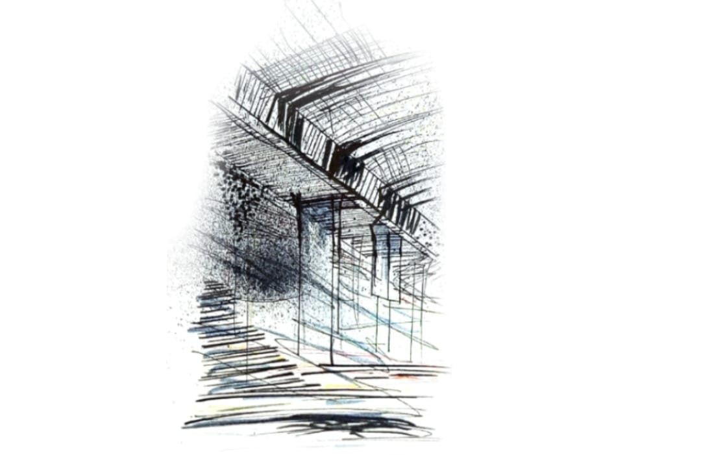
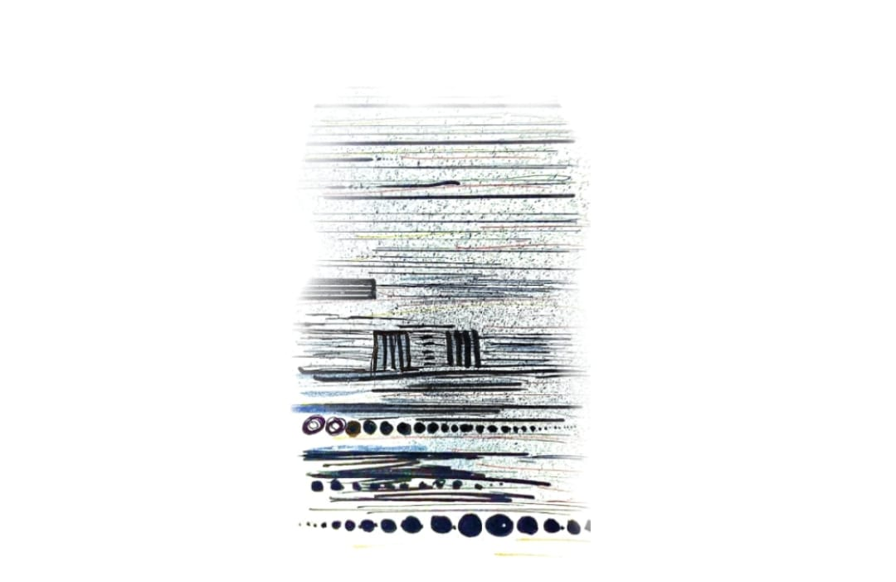
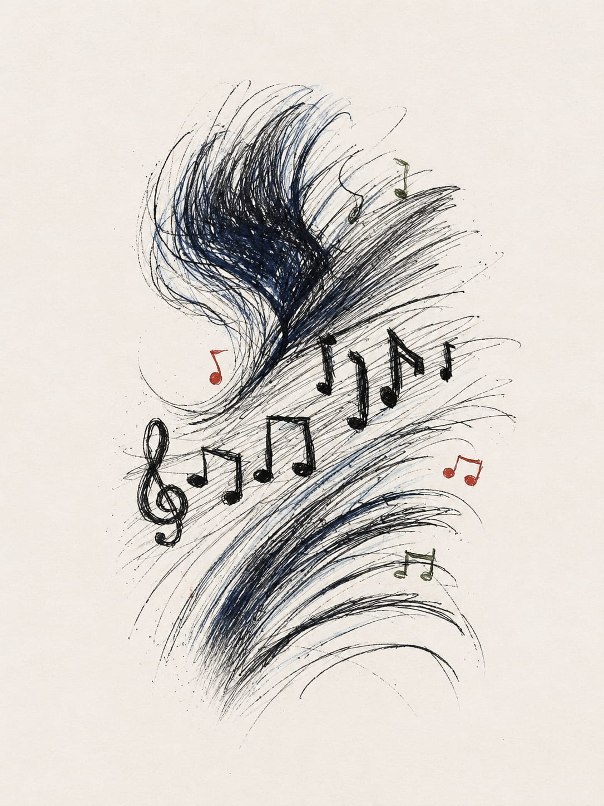
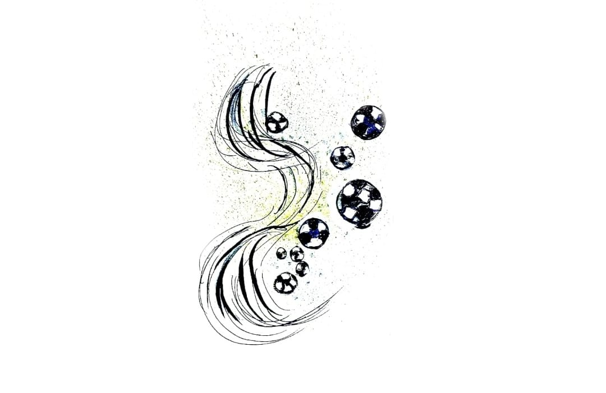
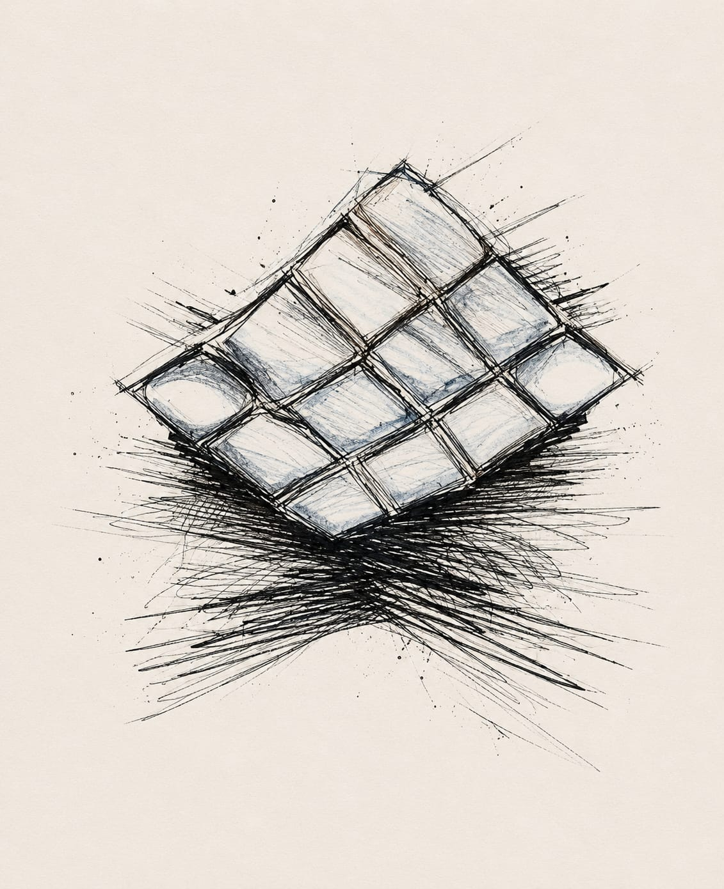
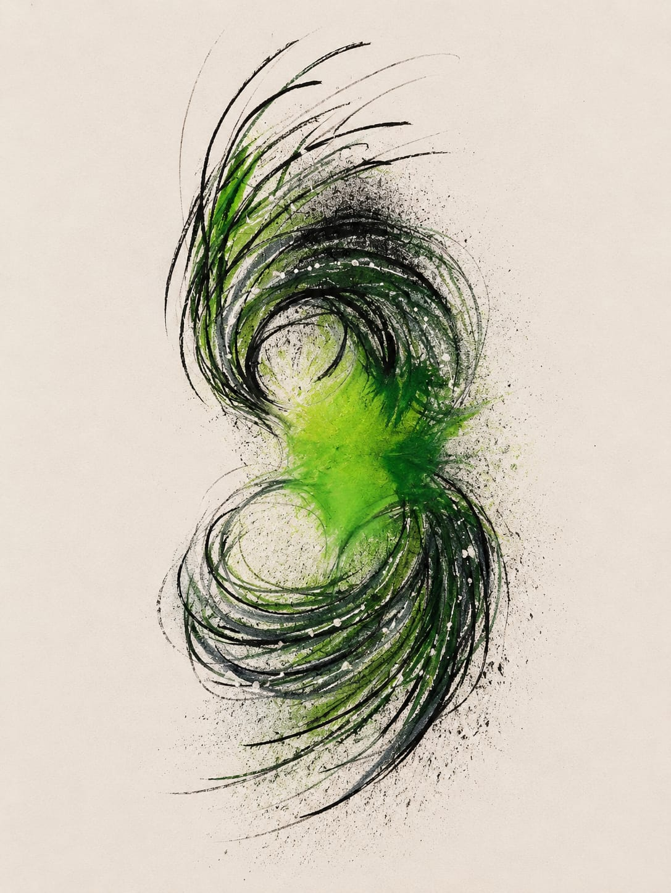
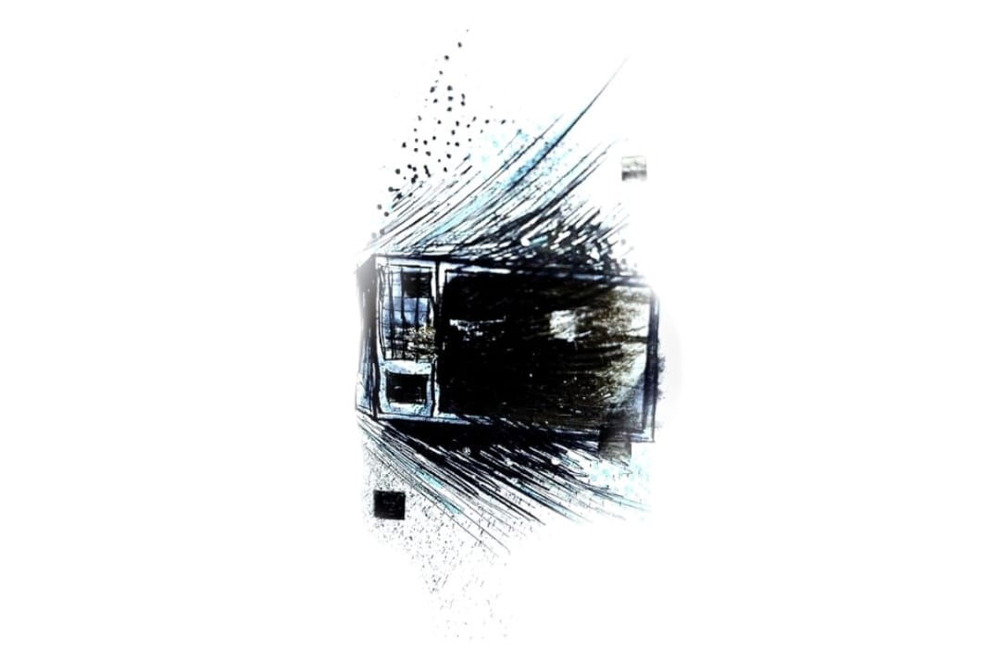

Este archivo reúne una colección de sonidos y registros visuales que representan distintos espacios y experiencias del entorno cotidiano. A través de ellos, se evidencian múltiples sonidos que forman parte de la vida diaria, capturados con la intención de resaltar aquello que normalmente pasa desapercibido. La propuesta consiste en observar y escuchar con mayor atención estos momentos reales, entendiendo que cada uno está ligado a lugares y situaciones específicas que construyen nuestra percepción del entorno.
Las grabaciones fueron realizadas en diversos espacios, como la calle, el transporte público y otros lugares caracterizados por el movimiento constante. Cada sonido refleja una experiencia particular y permite identificar el ambiente en el que fue capturado, aportando información sobre la dinámica y las características propias de cada contexto. De esta manera, el conjunto de registros no solo documenta sonidos, sino también las condiciones en las que estos ocurren.
Este proyecto busca que las personas puedan reconocer, analizar y valorar los sonidos que los rodean diariamente, comprendiendo que el sonido también es una forma válida de registrar la realidad. Además, el archivo organiza cada grabación de manera clara y estructurada, incluyendo datos como el lugar, la fecha y la duración, lo que facilita su interpretación y permite establecer relaciones entre los diferentes registros.
Tipos de sonidos incluidos
Dentro de este archivo se organizaron los registros sonoros en distintas categorías,
con el fin de facilitar su comprensión y análisis. Cada tipo de sonido representa
una forma diferente de percibir el entorno y permite identificar situaciones específicas
de la vida cotidiana.
Sonidos del entorno urbano y social
Universidad/Ciudad.
Esta categoría reúne sonidos capturados en espacios abiertos y con presencia de múltiples personas,
como calles, zonas universitarias y lugares concurridos. En ellos se percibe el movimiento constante,
las interacciones sociales y el ritmo propio de los entornos colectivos.
Sonidos de transporte público
Ciudad.
Incluye registros realizados en medios de transporte y espacios de desplazamiento.
Estos sonidos permiten reconocer dinámicas como el tránsito, la movilidad y la experiencia
de estar en constante cambio dentro de la ciudad.
Sonidos de acciones y cuerpo
Mascotas/Cuerpo humano.
En esta sección se agrupan sonidos más cercanos y cotidianos, producidos por el cuerpo
o por acciones simples del día a día. Estos registros permiten explorar una dimensión
más íntima del sonido, enfocada en lo inmediato y personal.
Sonidos de tecnología y dispositivos
Tecnología/Xbox/Microondas.
Aquí se encuentran los sonidos generados por objetos tecnológicos y aparatos electrónicos.
Representan una parte importante del entorno actual, donde lo digital y lo mecánico
forman parte de la experiencia diaria.
TABLAS
En este apartado se organiza la información correspondiente a los registros de audio y video
presentados en el archivo. A través de estas tablas se sintetizan datos clave como el nombre
del registro, el lugar donde fue capturado, la fecha y su duración aproximada. Esta estructura
permite visualizar de manera clara y ordenada cada uno de los elementos del proyecto,
facilitando su consulta y análisis.
AUDIOS
La siguiente tabla reúne los registros sonoros capturados en distintos espacios del entorno cotidiano.
Cada uno de estos audios está asociado a un contexto específico, lo que permite identificar patrones,
diferencias y características propias de los ambientes en los que fueron grabados. La información
presentada busca complementar la experiencia auditiva con datos concretos que ayudan a ubicar y
entender cada registro.
Nombre del sonido
Lugar
Fecha
Duración aproximada
Tráfico urbano puente de la 100
Ciudad Bogotá
15/03/2026
1:01
Transporte público
Ciudad
17/03/2026
0:21
Venta urbana mazamorra
Ciudad
15/03/2026
0:34
Grupo de música
Universidad
15/03/2026
0:21
Cancha
Universidad
17/03/2026
0:58
Agrupación de estudiantes en el Brócoli
Universidad
16/03/2026
0:15
Olfato canino
Casa
14/03/2026
0:20
Rascar brazo/mano
Casa
17/03/2026
0:12
Gato lamiéndose
Casa
17/03/2026
0:30
Teclado
Interior
17/03/2026
0:18
Xbox 2001
Interior
15/03/2026
0:15
Microondas/Ventilación
Interior
17/03/2026
0:18
VIDEOS
En esta tabla se presentan los registros audiovisuales incluidos en el proyecto,
organizados según su lugar de origen, fecha y duración. A diferencia de los audios,
estos registros combinan imagen y sonido, lo que permite una interpretación más completa
de cada situación. La tabla facilita la comparación entre los diferentes videos y
proporciona un marco de referencia para su análisis dentro del conjunto del archivo.
En este apartado se presentan una serie de audios e imágenes que documentan diferentes momentos del entorno cotidiano.
Cada registro corresponde a un espacio y situación específica, permitiendo reconocer los sonidos y dinámicas propias
de cada lugar. A través de estos elementos, se busca evidenciar cómo lo visual y lo sonoro se complementan para representar
la experiencia del entorno.
CIUDAD

Tráfico urbano Autopista 100
Este registro fue capturado debajo del puente de la calle 100, en un punto donde el flujo vehicular es constante
y genera una mezcla continua de sonidos. Se pueden identificar motores, frenos, el paso acelerado de los carros
y el eco que produce la estructura del puente.
Transporte público
Este audio fue grabado dentro de un medio de transporte público, donde se perciben sonidos característicos como
el movimiento del vehículo, las vibraciones internas y las voces de los pasajeros.

Venta urbana mazamorra
En este registro se captura el sonido de una venta ambulante de mazamorra, donde la voz del vendedor se convierte
en parte del ambiente urbano y comercial de la ciudad.
UNIVERSIDAD

Grupo de música
Este audio recoge la interpretación de un grupo musical dentro del entorno universitario. Se pueden distinguir
instrumentos, ritmos y la presencia de personas alrededor.

Cancha
Este registro fue realizado en una cancha, donde se perciben sonidos asociados al deporte y la actividad física,
como pasos, golpes, voces y movimiento constante.
Agrupación de estudiantes en el Brócoli
En este audio se escucha la concentración de estudiantes en un espacio común, donde predominan las conversaciones,
risas y el murmullo colectivo.
CUERPO
Olfato canino
Este registro se enfoca en un sonido sutil pero significativo: la respiración y el olfateo de un perro.
Aunque es un sonido leve, permite evidenciar una acción cotidiana desde una perspectiva más cercana e íntima.
Gato lamiéndose
En este registro se escucha a un gato mientras se limpia, produciendo sonidos suaves y repetitivos.
Este tipo de sonido transmite calma e intimidad.
Rascar brazo/mano
Este audio captura el sonido producido al rascar la piel, una acción simple y cotidiana que rara vez
se percibe de manera consciente.
TECNOLOGIA

Teclado
En este audio se registra el sonido repetitivo de un teclado en uso, caracterizado por pulsaciones constantes
que marcan un ritmo particular.

Xbox 2001
Este registro captura el sonido característico de una consola Xbox del año 2001, evocando una experiencia
tecnológica específica y cotidiana.

Microondas/Ventilación
En este audio se perciben los sonidos generados por un microondas en funcionamiento, junto con el sistema
de ventilación y el zumbido constante del aparato.
COLECCIÓN VIDEOS
Recorrido
Registro del entorno durante un recorrido.
Escena
Video de una pelea de gatos y demostración de un recorrido por diferentes espacios.
Gestos
Registro de los gestos realizados por una compañera llamada Michel.
Objeto
Contemplación visual de un aromatizante automático con luces LED.
.jpeg)